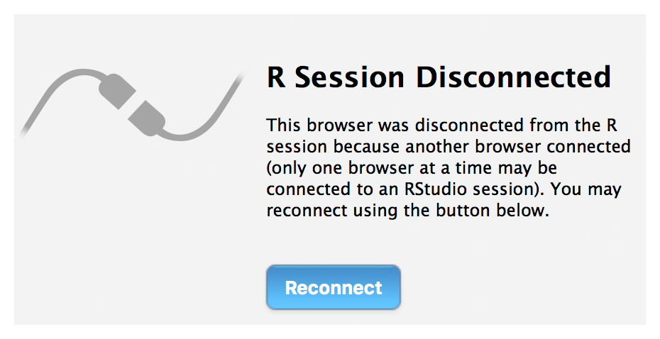

MT3508: Applied Statistics (2020/2021)
MT3508: Applied Statistics (2020/2021)R-Studio Cloud
Warning: I’m also rather new to using R-Studio Cloud. (In fact some of you may have already logged more hours if you have met it in other modules…) So this is a learning experience for everyone.
What is R-Studio Cloud?
This is a version of R-Studio that runs in your browser as a cloud-based solution for remote collaboration, code sharing and teaching.
You can access R-Studio Cloud here. When you enter your university email address an option will appear to allow you to log-in through the University. Access is still being arranged so some of you may not be able to do so just yet, but it should be possible very shortly.
Why are we using R-Studio Cloud?
You will be getting a fair bit of programming practice in this module. Ordinarily we would be teaching in an environment where tutors can simply look over your shoulder to help out or offer suggestions.
This is rather tricky at the moment.
If/when issues arise, the most efficient way to offer help is to be able to see exactly the problems you are having.
It’s my experience that screen sharing/emailing code/screen grab/copying the error message, only offers a quick fix when the issue is trivial. It is a frequent problem that the errors can not be recreated or there are version issues/updates/missing packages/missing information/other conflicts that cause more problems.
R-Studio Cloud gets around this by allowing tutors to see your work exactly as you are seeing it, error messages and all. We hope (and we are taking a bit of a leap of faith here) that the R-Studio Cloud is a straightforward way to offer help on coding in a way that is efficient, but still familiar, for everyone involved.
How will we use R-Studio Cloud?
Each practical sheet will have it’s own project area in R-Studio Cloud. These are projects that I will create and then share with you, from which you can duplicate a copy and then work on just as you would in R-Studio normally.
The idea is, if you run into problems you can let a tutor know and they can jump into your session to see what is happening.
Pros:
- You can continue working on your code whilst waiting for help.
- When a tutor takes a look they are seeing the most up-to-date version.
- The tutor can see all of your code. This is particularly helpful since error messages are often associated with something earlier on going astray and only being flagged later on.
- You can work asynchronously to the tutor but only have one version on the go.
- It avoids AppsAnywhere!
Cons:
- The system isn’t perfect. You will temporarily lose access to your work whilst a tutor is taking a look. If you see the following pop-up

it’s probably an indication that a tutor has jumped into your area and is taking a look at your work.
- We will need to figure out a workflow for requesting help etc.
- You will lose access when term ends (I don’t know the exact date).
At any point you can download a copy of your work. I will send out reminders to do so as we complete the practical sheets so that you can retain copies of your work.
What about R-Studio desktop
If you would prefer to work on your local version of R-Studio, offline, then you are welcome to do so. But R-Studio Cloud will be the mechanism through which we will be offering coding and teaching support (so you may just need to move your work round a little).